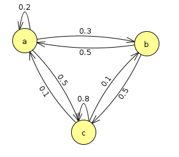

Week 4 Exercise: Markov Chains of Characters
Chris Tralie
We're now going to go over one of the fundamental techniques for the second unit: markov chains. You can read about the basics at this link.
Task 1: Representing And Synthesizing Markov Chains
Your first task will be to create a program that simulates a Markov chain to create random strings according to transition rules. Figure out how to represent the transitions, as well as how to choose random characters based on the probabilities. For instance, let's say you have three possible states, a, b, and c, and the following state diagram for transitions. Let's say you have the following transition probabilities
- The probability paa of staying at a is 0.2
- The probability pab of transitioning from a to b is 0.3
- The probability pac of transitioning from a to c is 0.5
Let's complete the full state transition diagram for these three letters
NOTE: There is no arrow going from b to itself, so that transition probability is 0.
Note also: All of the outgoing arrows from each state sum to 1. This is because the probability of anything happening is always 100%. It's an important sanity check to make sure this is true for any Markov chain you have.
See if you can translate this all into code now. Below are a some random functions you can use to help you.
Alternatively, you can use numpy's random.rand method
Solution Notes
A good way to represent Markov transition data is with a dictionary of dictionaries
then, it's quite easy to lookup transition probabilities with two dictionary lookups
To draw transitions according to particular probabilities by just choosing a real number uniformly between 0 and 1, we can think of divvying up the unit interval, as shown below for the transitions from a in the example we're looking at so far:
This translates into saying that we'll make the following choices when we draw a number x between 0 and 1
- an a if 0 ≤ x < 0.2
- a b if 0.2 ≤ x < 0.5
- a c if 0.5 ≤ x ≤ 1.0
Task 2: Computing Probabilities of Sequences
Your next task is to report how likely a particular string of as, bs, and cs is given the above probabilities. One of the key assumptions of Markov chains is that they are memoryless. What this means is that when you're at a particular character, it doesn't matter how you got there; the transition probabilities to the next character are always fixed. In probability language, this translates into independence, and this means you can simply multiply all of the transition probabilities together to get the final probability. For example, let's suppose we had the string
\[ abccaa \]
Then we'd have to compute the product
\[ p_{ab} \times p_{bc} \times p_{cc} \times p_{ca} \times p_{aa} \]
If we plug in the probabilities from the example we started with, this product is
\[ 0.3 \times 0.5 \times 0.8 \times 0.1 \times 0.2 = 0.0024\]
Write a method in your code to compute the probability of a particular sequence given the transition probabilities you represented.
Task 3: Stationary Distributions
When you look at the above state transition diagram, it appears that we'd have a lot more cs than anything else, and that we'd also have more as than bs. But how do we quantify this? Write a simulation to draw a bunch of random characters, and count how often you end up at an a, b, or c after a certain number of draws. Click here to view an animation of this sort of thing.